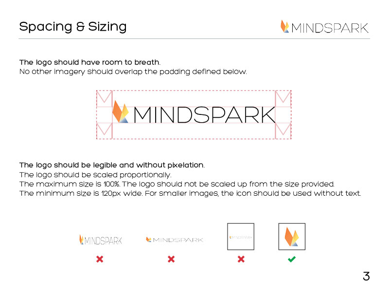

Mindspark

Teresa Flour Lamb

Mindspark Rebrand
Brand Identity and Logo Design for an established internet application company. Collaboration with Marie McGwier.
This is the previous logo. We were asked by Mindspark’s COO to make a new logo reflecting the new direction of the company. The new logo should express innovation and professionalism.

In this case we decided to pick a font first. Here are some proposed logo ideas with the selected font. We wanted something abstract and geometric that incorporated transparency.
The Final Design
One Color Versions

